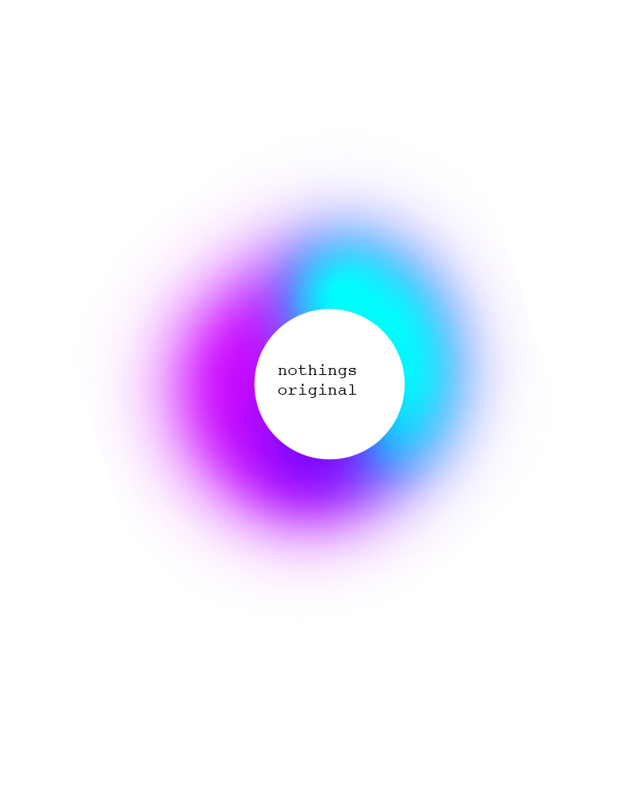
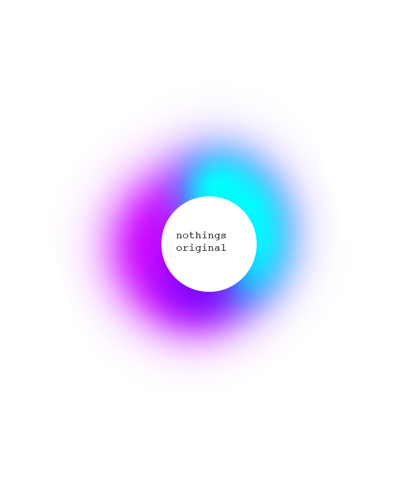

explore the silence
to see the sound
explore the silence
to see the sound

I N T E R N E T O F B R O K E N T H I N G S
You know when there’s a teenager on the bus listening to music on his mobile – without headphones – and all the other passengers are stealing glances, unsure whether he’s oblivious or sociopathic? Well things like that give the impression that cities are getting noisier, and that we need to retreat ever deeper into ourselves. I’m not convinced it’s true. But one man who would have taken this incident as cast-iron proof was the social critic Ivan Illich.
“Silence is a commons,” wrote Illich. He argued that just as the communal pastures were privatised in the 18th century, so now the collective sense of calm is being invaded by technology. He was thinking of loudspeakers, computers and electronic gadgets, which he lumped together in a single category: “the machines”. This was in the 1980s, before email, mobile phones, texting and the infinite stream of social media. One can only imagine what he would have made of this daily communication firebombing. But the battered and shrivelled human attention span, if not quite a commons, would certainly have appeared to Illich as a victim of noise.
What struck me about Illich’s argument is that my own response to the erosion of silence was the exact opposite of what he would have advocated. Faced with a dwindling commons, I was forced to privatise my own patch. I did this with a pair of Bose QuietComfort ® 15 headphones. Not only do they sequester the ears behind a wall of black leather, they feature “Acoustic Noise Cancelling ® technology”. The way noise-cancelling works, in brief, is by measuring enemy sound waves and retaliating with their mirror image, the sonic equivalent of anti-matter. It’s an invisible battle in which competing sound waves cancel each other out. Victory is the sound of orbital noise flatlining – silence is a sonic massacre. In other words, the QC 15s are the product of an arcane branch of physics that the rest of us know simply as “magic”.
Man invented noise-cancelling to improve the signal-to-noise ratio for helicopter and airplane pilots, but later found a much more lucrative market in music lovers. I confess that I am no high-fidelity obsessive. I do not (although I think I’m in the minority here) manoeuvre the city in my own private sound bubble, listening to Eye of the Tiger as I power-cycle down the Clerkenwell Road. I shelled out for this exorbitantly pricey piece of equipment at a time when I was sharing an office and found that I simply couldn’t concentrate. It’s not the roiling drone of the city that is distracting – white noise is just fine. It’s specific noise that is invasive, that conversation that earworms its way into your consciousness and, like a bad guest, won’t leave.
Ideally, I was aiming for a portable isolation ward. Donning the QC 15s, you are met with the gentle roar of a conch shell. But flick the switch on the right ear-cup and you are suddenly hooded in silence. It’s not the hollow sound-freeze of outer space, but at the very least a techy tea cosy that takes the edge off. (Tip: for persistent earworms, add a layer of ambient insulation, something Brian Eno-ish or Arvo Pärt-ish.) Easily distracted people such as myself attune all too readily to the peripheral, and there are times – pace Illich – when what is central must be walled off and gated. This is beginning to sound an awful lot like the neoliberalisation of sound, isn’t it?
Anyway, suffice to say that I got quite used to working this way, and to tuning out with my QC 15s on planes, and generally felt quite protective of my own fenced-off pasture of silence. Given time, I might have devolved into one of those Second Amendment nutjobs guarding the picket fence with their own private firepower. But no. For the beloved headphones broke.
One day I was trying to watch a film clip when all I could pick up was the background music. The dialogue was missing. Mouths moved but no sound issued forth.
Not to worry, I thought. This is an expensive piece of kit, it’s bound to come with an iron-clad five-year warranty. I checked. One year. Naturally, I had owned mine for two.
I wasted no time in emailing Bose customer service. I was polite. I complimented them on their excellent equipment. But I was also a disgruntled consumer with rights. “What do you mean by charging £250 for a pair of headphones that only lasts two years?” I was indignant. I was in charge. I may even have mentioned that I was a journalist. A design critic. The memory’s hazy but it’s possible I threatened to bring this outrage to public attention.
While I awaited the customer service team’s grovelling response, I googled “broken Bose headphones”. Sifting through the forums, I encountered the usual welter of repetitive outrage and fanboy infatuation. The options seemed to be a choice between getting a discount replacement (and prolonging the Bose bromance) or cursing the company’s very existence. There were few options for repairing them oneself (because, I suppose, the majority of consumers are not magicians). Which is a pity, because I had started to see self-help forums as the natural successors to the electrical repair shops that once existed on smaller high streets. Weren’t the DIY and Maker movements supposed to deliver us from the cycle of dispose-and-consume?
Whenever the subject of fixing things comes up, I’m always reminded of two devices in my life that endured against the odds. One was a television set that my American grandparents bought long before I was born, a small wooden wardrobe with a curved screen that still clunked through the channels dependably well into my early adulthood. The other is a Volkswagen Golf from the 1980s belonging to my in-laws that is so famously reliable and economical that strangers in petrol stations still routinely offer to buy it. Despite being mechanically inept, I tend to romanticise a world of mechanical objects – of motorcycles and replacement valves. The obvious problem with today’s hyper-performing, magical products is that they are black boxes. We are so in love with their metaphysics, with their gestalt, that we forgive their ephemerality. No one will ever write a book called Zen and the Art of iPhone Maintenance.
It seems to me that the logic of today’s products is heading ineluctably one way. Our devices will be able to do more and more, while lasting less and less long, until eventually they can do everything for no time at all. In the future, we will bestride the Earth like gods, wielding awesome, omnipotent gadgets that break after two minutes. Calling up customer services at [insert evil tech company] we will be told that the warranty was only one minute, and didn’t we read the terms and conditions?
Here we are fretting about the Internet of Things, and the fact that our toasters will be spying on us, when in fact by the advent of this paradigm shift our household gadgets will be giving up the ghost long before they’ve siphoned off enough data to be of any use to our overlords. The IoBT – the Internet of Broken Things – is not quite such a world-changing proposition. Or perhaps, just perhaps, the allure of accessing all our data will finally persuade manufacturers to make things that last. Maybe consumer brands will give up on built-in obsolescence in return for endless surveillance. Hurray.
After four days there was still no reply from Bose. I tweeted @BoseService, girding myself for an all-out public spat. They were very apologetic. They pointed out that my headphones came with a spare cable. Had I tried swapping the cables?
I hadn’t. And swapping the cables seems – embarrassingly – to have done the trick. My QC 15s are back at peak noise reduction capacity. They’re firing off negative waves like the fury. The silence that Illich said is “taken from us by machines” has been restored to me by my machine. As you were.
Justin McGuirk

Shhhh...
In Designer as Author I argued that we are insecure about the value of our work. We are envious of the power, social position and cachet that artists and authors seem to command. By declaring ourselves "designer/authors" we hope to garner similar respect. Our deep-seated anxiety has motivated a movement in design that values origination of content over manipulation of content.
Designer as Author was an attempt to recuperate the act of design itself as essentially linguistic—a vibrant, evocative language. However, it has often been read as a call for designers to generate content: in effect, to become designers and authors, not designers as authors. While I am all for more authors, that was not quite the point I wanted to make.
The problem is one of content. The misconception is that without deep content, design is reduced to pure style, a bag of dubious tricks. In graphic-design circles, form-follows- function is reconfigured as form-follows-content. If content is the source of form, always preceding it and imbuing it with meaning, form without content (as if that were even possible) is some kind of empty shell.
The apotheosis of this notion, repeated ad nauseum (still!), is Beatrice Warde's famous Crystal Goblet metaphor, which asserts that design (the glass) should be a transparent vessel for content (the wine). Anyone who favored the ornate or the bejeweled was a knuckle-dragging oaf. Agitators on both sides of the ideological spectrum took up the debate: minimalists embraced it as a manifesto; maximalists decried it as aesthetic fascism. Neither camp questioned the basic, implicit premise: it's all about the wine.
This false dichotomy has circulated for so long that we have started to believe it ourselves. It has become a central tenet of design education and the benchmark against which all design is judged. We seem to accept the fact that developing content is more essential than shaping it, that good content is the measure of good design.
Back when Paul Rand wrote "There is no such thing as bad content, only bad form," I remember being intensely annoyed. I took it as an abdication of a designer's responsibility to meaning. Over time, I have come to read it differently: he was not defending hate speech or schlock or banality; he meant that the designer's purview is to shape, not to write. But that shaping itself is a profoundly affecting form. (Perhaps this is the reason that modern designers—Rand, Munari, Leoni—always seem to end their careers designing children's books. The children's book is the purest venue of the designer/author because the content is negligible and the evocative potential of the form unlimited.)?
So what else is new? This seems to be a rather mundane point, but for some reason we don't really believe it. We don't believe shaping is enough. So to bring design out from under the thumb of content we must go one step further and observe that treatment is, in fact, a kind of text itself, as complex and referential as any traditional understanding of content.
A director can be the esteemed auteur of a film he didn't write, score, edit or shoot. What makes a Hitchcock film a Hitchcock film is not the story but a consistency of style, which winds intact through different technologies, plots, actors, and time periods like a substance of its own. Every film is about filmmaking. His great genius is that he is able to mold the form into his style in a genuinely unique and entertaining way. The meaning of his work is not in the story but in the storytelling.
Designers also trade in storytelling. The elements we must master are not the content narratives but the devices of the telling: typography, line, form, color, contrast, scale, weight. We speak through our assignment, literally between the lines.
The span of graphic design is not a history of concepts but of forms. Form has evolved dramatically from one year to the next, and suggests a profession that continually revises and reshapes the world through the way it is rendered. Stellar examples of graphic design, design that changes the way we look at the world, are often found in service of the most mundane content: an ad for ink, cigarettes, sparkplugs or machinery. Think of Piet Zwart's catalogues for electrical cable; or the travel posters of Cassandre or Matter; or the New Wave work of Weingart, Greiman and Freidman; or the punk incitations of Jamie Reid, in which the manipulation of form has an essential, even transformative, meaning.
At a 1962 conference at the Museum of Modern Art, conservative art critic Hilton Kramer denounced Pop Art as "indistinguishable from advertising art" because "Pop Art does not tell us what it feels like to be living through the present moment of civilization. Its social effect is simply to reconcile us to a world of commodities, banalities and vulgarities." But perhaps the content of graphic design is exactly that: an evocation of "what it feels like to be living through the present moment of civilization," with all its "commodities, banalities and vulgarities." How else can we discuss the content of a typeface or why the typography of a surfing magazine suddenly becomes relevant? Or how a series of made-up or 'self-initiated' posters—already a medium of dubious functionality— can end up on the wall of a major design museum? Work must be saying something, which is different than being about something.
Because the nature of the designed object is limited, individual objects are rarely substantial enough to contain fully rendered ideas. Ideas develop over many projects, spanning years. Form itself is indexical. We are intimately, physically connected to the work we produce, and it is inevitable that our work bears our stamp. The choice of projects in each designer's oeuvre lays out a map of interests and proclivities. (I use the singular designer in the categorical sense, not the individual.) The way those projects are parsed out, disassembled, reorganized and rendered reveals a philosophy, an aesthetic position, an argument and a critique.
This deep connection to making also positions design in a modulating role between the user and the world. By manipulating form, design reshapes that essential relationship. Form is replaced by exchange. The things we make negotiate a relationship over which we have a profound control. The trick is to find ways to speak through treatment, via a range of rhetorical devices—? from the written to the visual to the operational—to make those proclamations as poignant as possible, and to return consistently to central ideas, to re-examine and re- express. In this way we build a body of work, and from that body of work emerges a singular message, maybe even what it feels like to be living now. As a popular film critic once wrote, "A movie is not what it is about, it's how it is about it." Likewise, for us, our "What" is a "How". Our content is, perpetually, Design itself.
Micheal Rock
F U C K C O N T E N T


 

This week, Facebook launched Paper, an app designed to transform the experience of reading Facebook's content on your iPhone. It's uncluttered, slick, minimalist, polished. As one of the project's engineers put it: "Paper was designed on a principle: content should be respected … [and] if content is to be respected, it should be beautifully presented."
You hear the word "beautiful" all the time, these days, when web design's being discussed. Medium, the blogging platform created by the Twitter co-founder Ev Wiliams, was conceived to be "simple [and] beautiful". Likewise Svbtle, another "beautiful" stripped-down publishing system, was designed to "get out of the way". This is the aesthetic of Jony Ive's iOS7, with its flat icons and defiant lack of adornment; it's an aesthetic for a world that does its reading on smooth pieces of black glass with curved corners. It's the aesthetic that's rapidly coming to dominate the web – which is why I feel some nervousness in poking my head above the parapet to say: what if I don't want my reading experience to be this beautiful?
Yes, yes, of course this is partly just the ranting of a decreasingly young web user, disgruntled by change. But it isn't only that. There's some evidence to suggest that when you make the reading experience too smooth and glossy and beautiful, you make it less engaging and satisfying, too. The key concept here, explored in depth by the psychologist Adam Alter, author of the book Drunk Tank Pink, is "cognitive disfluency". When information glides by too frictionlessly, we're liable to find it harder both to understand and to retain.
In a classic experiment, students were presented with a printed question: how many of each animal did Moses take into the ark? When the question was displayed in an easy-to-read typeface, 88% missed the error – that the gentleman in question was Noah, not Moses. When it was displayed in a hard-to-read font, that proportion fell to 53%. When a font's harder to read, writes Alter, "we assume the task is difficult and requires additional mental effort … We respond by recruiting additional mental resources to overcome that challenge, and our responses tend to be more accurate." Other studies have found that information received in unfamiliar fonts is memorised more effectively, and that it may be harder to grasp material consumed in e-book form, where the words slide by as if on ice skates, than in print.
I'm not really suggesting that online publishers should deliberately employ awful fonts. But I doubt I'm alone in feeling a certain satisfaction when what I'm reading is presented in a non-beautiful way. It's hard to describe. But for some reason (linked to cognitive disfluency?) there's a greater sense of getting purchase on the material, of getting the meat of it between my teeth.
I hope the people at the New York Review of Books won't take it wrongly when I say I consider their magazine to be Exhibit A in this regard. Every time I see that crazy jumble of fonts on the cover, then turn to the dense columns of type inside, I get a small but palpable thrill. All that density and lack of white space says: dive in; there's lots to get absorbed in here.
By contrast, there's an unbearable lightness to the slippery minimalism of Medium, and sometimes it gets in the way. Writing presented like that is wonderfully easy to consume, yet also wonderfully easy to forget. By the time I get to the end of even a short piece, the first paragraph has faded not just from the screen, but from my mind.
I don't expect the born-again minimalists of Silicon Valley to start re-cluttering their user interfaces. But it would be nice if they could remember that current aesthetic fashions are just current aesthetic fashions – not some ultimate Platonic ideal of how to communicate online. And if anyone wants to design a plug-in to make Medium look like the New York Review of Books, I can guarantee you one customer, at least.
Olivia Burkeman
"Designers also trade in storytelling. The elements we must master are not the content narratives but the devices of the telling...
...typography, line, form, color, contrast, scale, weight.
We speak through our assignment, literally between the lines"
what has been seen can be lost
what has been created can be destroyed
but what has been broken cannot always be fixed...
. . . w h a t
what has been seen can be lost. - what has been created can be destroyed. - but what has been broken cannot always be fixed...